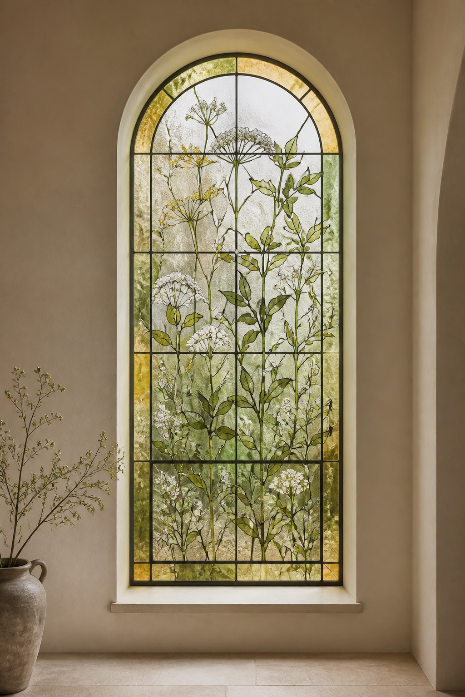
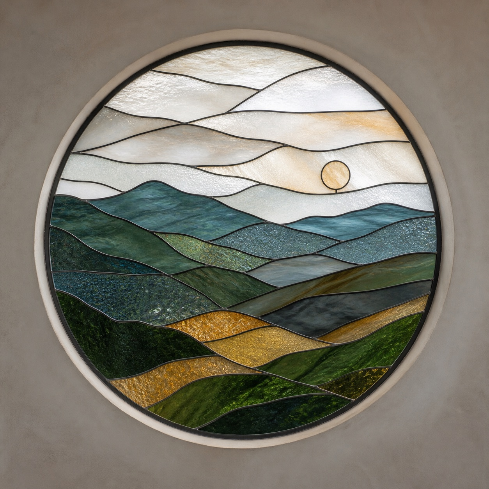
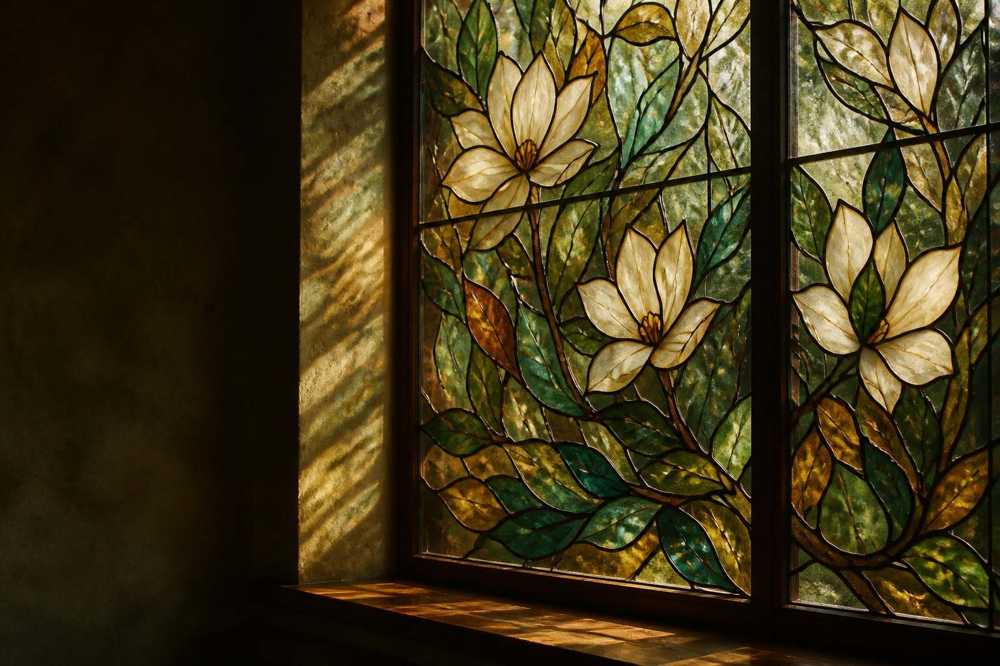
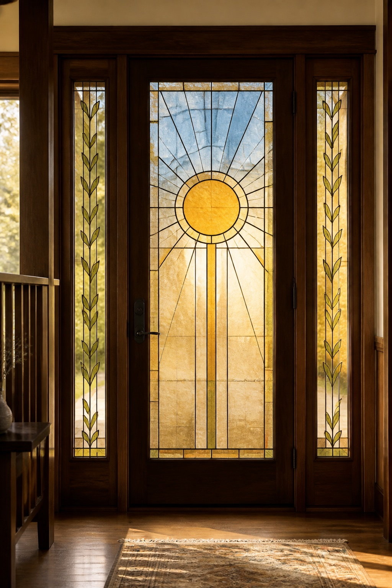
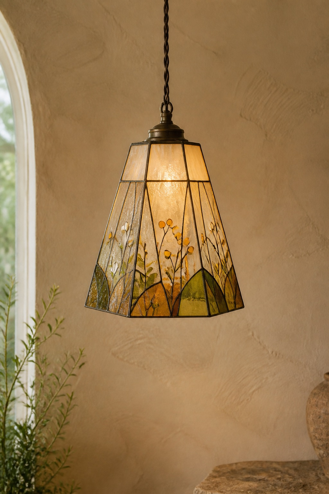
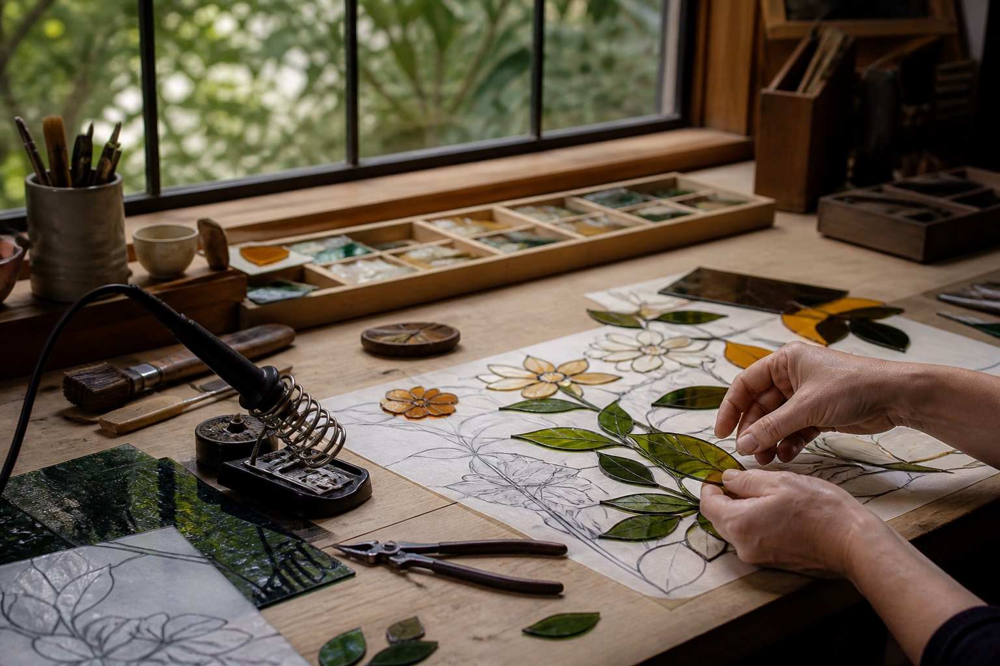

Voir le projetLe vitrail façonné par la nature
Lumière.
Couleur.
Histoire.
Des vitraux façonnés à la main, inspirés par les formes silencieuses et la lumière changeante du monde naturel.
Découvrir les œuvresFenêtre Magnolia · Jardin d’hiver · 2026

Voir le projet
Voir le projet
Voir le projet
Voir le projet
Rencontrer Elena
« Je crée des vitraux qui saisissent la beauté de la lumière naturelle et transforment une pièce au fil de la journée. »
Dans son atelier paisible de Portland, Elena réalise des vitraux architecturaux uniques, nourris par l’observation attentive et le savoir-faire traditionnel.
À propos de l’artiste ↗01 — Le savoir-faire
Dessiné lentement.
Façonné à la main.
Éclairé par la nature.
Du premier trait de crayon au polissage final, chaque étape est guidée par le lieu qui accueillera l’œuvre.
Découvrir la fabrication ↗